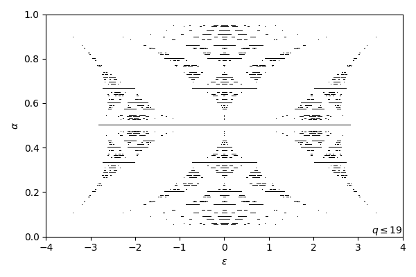
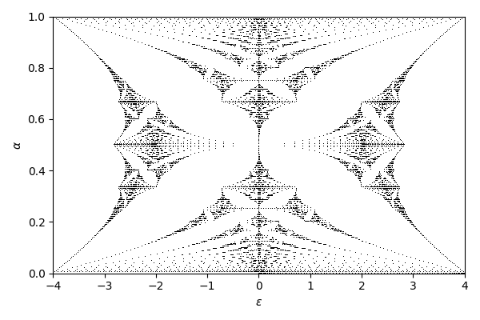
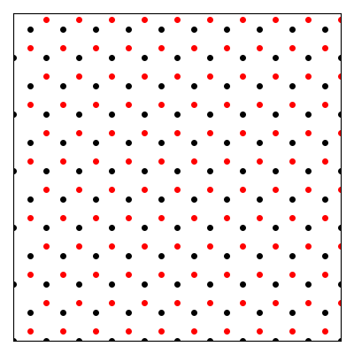

Written in May 2020 by spxtr. Last updated December 2020. All of the code used to generate the figures is available on GitHub. Feel free to open issues and pull requests.
Crystals have a recurring lattice structure with periodicities of a few times \(10^{-10}\) meters. In a magnetic field, electrons in the crystal undergo cyclotron motion with a different periodicity. In 1976, Douglas Hofstadter described[1] the interesting behavior that appears in 2D systems as the two periodicities become comparable. The energy spectrum of such systems is a beautiful fractal butterfly. Let's compute it!
The symbol \(\alpha\) represents the ratio of the magnetic flux through a lattice cell (\(a^2 B\) for a square lattice of side length \(a\)) to the magnetic flux quantum \(h/e\):
$$\alpha = a^2 B / (h/e)$$
In most experiments we cannot change the size of the lattice, so we control \(\alpha\) by controlling the magnetic field. To reach \(\alpha=1\) in a typical crystal lattice requires fields in the tens of thousands of teslas, which is not feasible with modern technology. For context, MRIs go up to a few teslas. In recent years we've managed to sidestep this problem by using atypically large crystal lattices. More on that later.
If you are interested in the mathematical derivation of the butterfly then I recommend reading Hofstadter's original paper. It's quite readable, especially if you have studied the quantum Hall effect. I will not go into the details here. He starts with a simple dispersion \(E(\vec{k})=2E_0(\cos k_xa + \cos k_ya)\) and computes the effect of a magnetic field. After a fair amount of work, he derives an eigenvalue equation relating the energy of a state \(\epsilon\) to \(\alpha\):
$$g_{n+1}+g_{n-1}+2\cos(2\pi n\alpha-\nu)g_n=\epsilon g_n$$
\(\nu\) is a phase that can take values between \(0\) and \(2\pi\).
The set of \(\epsilon\) and \(\alpha\) that solve this equation make up the butterfly. The strange result is that the solutions seem to depend on the rationality of \(\alpha\). Specifically, if \(\alpha = p/q\) for integers \(p\) and \(q\), then there will be \(q\) intervals of energy that solve the problem. This is unusual because we can continuously tune magnetic field. A tiny change in field may lead to an enormous change in \(q\).
For those who know what a Spirograph is, the rationality criterion is analogous to the fact that the Spirograph will eventually trace back over itself only if the ratio of the size of the wheels is rational.
Anyway, enough talk. Time to code. I'm going to use Python 3 because it's rad.
import numpy as np
from scipy import linalg
import matplotlib.pyplot as plt
π = np.pi
The eigenvalue equation can be recast in the following form:
$$\begin{pmatrix} g_{n+1} \\ g_n \end{pmatrix} = \begin{pmatrix}\epsilon - 2\cos(2\pi n\alpha-\nu) & -1 \\ 1 & 0\end{pmatrix}\begin{pmatrix} g_n \\ g_{n-1} \end{pmatrix}$$
Hofstadter does additional work and shows that a necessary condition for the solution to be physically meaningful is for the following inequality to hold, where \(\alpha = p/q\) and \(\nu = \pi/2q\):
$$\left | \mathrm{Tr} \prod_{n=0}^q \begin{pmatrix} \epsilon - 2\cos(2\pi n \alpha - \nu) & -1 \\ 1 & 0\end{pmatrix} \right | \leq 4$$
In code, define the matrix like so:
def A(ε, n, α, ν):
return np.array([[ε - 2*np.cos(2*π*n*α - ν), -1], [1, 0]])
We need a rational list of magnetic fields and energies to compute this trace at. The butterfly is symmetric above \(1/2\) so we can save computation time by only computing one half of it.
αs = []
for q in [2, 3, 5, 7, 11, 13, 17, 19]:
for p in range(1, q // 2 + 1):
αs.append((p / q, p, q))
αs = sorted(αs, key=lambda α: α[0])
εs = np.linspace(-4, 4, 1001)
Next, iterate over all fields and energies, computing the trace of the product for each. This takes about 3 seconds on my laptop. In 1976 it probably took a bit longer.
trs = np.empty((len(αs), len(εs)))
for i, (_, p, q) in enumerate(αs):
for j, ε in enumerate(εs):
m = np.eye(2)
for n in range(q):
m = A(ε, n, p/q, π/2/q) @ m
trs[i, j] = np.abs(np.trace(m))
Finally, plot every point that has trace less than 4. If you rearrange this code such that there is a plot call for each point, the code will be much simpler but also extremely slow. That's why I filter the output before calling plot once.
xs = []
ys = []
for (α, _, _), tr in zip(αs, trs):
for ε, t in zip(εs, tr):
if t < 4:
xs.extend([ε, ε])
ys.extend([α, 1 - α])
plt.figure(figsize=(6, 4))
plt.plot(xs, ys, 'k,')
plt.xlabel('$\\epsilon$')
plt.ylabel('$\\alpha$')
plt.show()

Not bad! There are a few problems though. First, to get a better picture I'll need to go to higher \(q\) and finer \(\epsilon\). That gets slow fast, since the runtime depends linearly on the resolution in \(\epsilon\) and quadratically on \(q\). The actual traces can be very sharp in energy, which means that if my energy spacing isn't fine enough then I will miss solutions. This is especially noticable at the corners and edges of the butterfly. By going up to \(q=29\) I get a nicer image, but it's still not exactly perfect.
Rewrite the previous eigenvalue equation in matrix form with \(V_n=2\cos(2\pi n \alpha - \nu)\):
$$\begin{pmatrix}V_0 & 1 & 0 & 0 & \cdots & 0 & 1\\ 1 & V_1 & 1 & 0 & \cdots & 0 & 0\\ 0 & 1 & V_2 & 1 & \cdots & 0 & 0\\ 0 & 0 & 1 & V_3 & \cdots & 0 & 0 \\ \vdots & \vdots & \vdots & \vdots & \ddots & \vdots & \vdots \\ 0 & 0 & 0 & 0 & \cdots & V_{N-2} & 1 \\ 1 & 0 & 0 & 0 & \cdots & 1 & V_{N-1} \end{pmatrix}\begin{pmatrix}g_0 \\ g_1 \\ g_2 \\ g_3 \\ \vdots \\ g_{N-2} \\ g_{N-1} \end{pmatrix}=\epsilon \begin{pmatrix}g_0 \\ g_1 \\ g_2 \\ g_3 \\ \vdots \\ g_{N-2} \\ g_{N-1}\end{pmatrix}$$
We can find the eigenvalues directly. It looks like a nasty matrix, but all but \(3N\) of its \(N^2\) elements are 0, so it's really not so bad. In the original equation, \(N\) is \(\infty\). My computer can't go quite that far, but it can go to a few thousand which is almost as good.
def Hamiltonian(N, α, ν):
H = np.zeros((N, N))
for n in range(N):
H[n, n] = 2*np.cos(2*π*n*α - ν)
H[(n + 1) % N, n] = 1
H[(n - 1) % N, n] = 1
return H
Now just calculate the eigenvalues for various different fields. We don't need to worry about rationality of the field, so let's just do evenly spaced fields.
N = 200
αs = np.linspace(0.0, 0.5, 101)
νs = np.linspace(0.0, 2*π, 1, endpoint=False)
eigs = np.zeros((len(αs), len(νs), N))
for i, α in enumerate(αs):
for j, ν in enumerate(νs):
eigs[i, j, :] = linalg.eigvalsh(Hamiltonian(N, α, ν))
eigs = eigs.reshape((len(αs), len(νs)*N))
And plot them.
plt.figure(figsize=(6, 4))
plt.plot(eigs, αs, 'k,')
plt.plot(eigs, 1 - αs, 'k,')
plt.xlim(-4, 4)
plt.ylim(0, 1)
plt.xlabel('$\\epsilon$')
plt.ylabel('$\\alpha$')
plt.show()

Looks good!
There's an added bonus, too. Because we are computing energy states and not energy ranges, we can find the density of the biggest gaps in the system by counting the number of states with lower energy. In electrical transport measurements in 2D materials we usually directly control density, not energy, so this is important. We care about the gaps because cool macroscopic quantum physics shows up in there, like quantised Hall resistances and zero longitudinal resistances.
Shortly after Hofstadter's work, G. H. Wannier predicted[2] that the density of the gaps would fall on straight lines described by diophantine equations \(\alpha = (n-s)/t\) for integer \(s\) and \(t\).
For a given field \(\alpha\) we have a list of eigenenergies. Sort them, then take the diff from one to the next. Gaps will show up as large diffs here. The density at the gap is the total number of states with lower energy. Because the list is sorted, that's just its index in the list, rescaled by the number of eigenvalues per field. Here I compute the top 10 gaps.
topn = np.argsort(np.diff(np.sort(eigs)))[:,-10:] / N / len(νs)
Plot them the same way.

This recovers the expected diophantine behavior. Nice! This behavior has been experimentally observed in graphene-hBN superlattices by multiple groups[3][4]. Check out those papers and you'll see plots that look very similar to the above, except that they worked a lot harder for them.
Note that at low field and low density we recover the Landau levels from the integer quantum Hall effect.
From a computational perspective there's a pretty big problem with this approach. The Hamiltonian we are computing is finite, which means that if we increase the resolution in \(\alpha\) then we may run into finite-size effects.
Below, all I have done is double the resolution compared to the previous plots. I am sweeping \(\nu\) from \(0\) to \(2\pi\) to make the slick animation.

I think it's cool that you can still see the butterfly in very small lattices. Here I've set size to 10 and I'm sweeping \(\nu\) between \(0\) and \(2\pi\).

Again restrict ourselves to rational \(\alpha\) as in the first part. Another way to formulate the butterfly is the set of energies where this particular Lyapunov exponent is zero:
$$\log\left(\left | \det(H(\alpha) - \epsilon I)\right | \right) = 0$$
Where \(H(\alpha)\) is a \(q{\times}q\) matrix with the same entries as the Hamiltonian from the last section, with \(\nu=0\).
outs = np.zeros((len(αs), len(εs)))
for i, (α, _, q) in enumerate(αs):
for j, ε in enumerate(εs):
m = Hamiltonian(q, α, 0) - ε*np.eye(q)
outs[i, j] = np.linalg.slogdet(m)[1] / q
It turns out there's a function in numpy that computes the logarithm of the absolute value of the determinant of a matrix for you. This can be valuable if the determinant is likely to overflow, which happens in our case for large \(q\).
We can plot line cuts. To have evenly spaced traces, just pick one really big value of \(q\) (here I did 101) instead of all primes up to a point.

Note that due to finite resolution in energy and a sizable background signal, many of the levels don't quite reach 0. Lets just ignore that and plot it with pcolormesh. The Spectral colormap is the best, and you can get a sense for the scale from the line cuts above.

Very cool. We've lost the ability to directly measure the density of the gaps, but it does look really neat.
Because one wasn't enough, a French group decided to add a second particle along with a simple model for interactions[5]. The eigenvalue equation is similar to the single-particle case, only now we have to track two indices rather than one. There's also an additional term that adds an interaction energy \(U\) when the particles are on the same site:
$$g_{n+1,m} + g_{n-1,m} + g_{n,m+1} + g_{n,m-1} + \left[2\cos(2\pi\alpha n + \nu_n) + 2\cos(2\pi\alpha m + \nu_m) + U\delta_{n,m}\right]g_{n,m} = \epsilon g_{n,m}$$
In practice I just set \(\nu_n=\nu_m=\nu\). Computing this is not much more difficult conceptually than before. The big problem is that the size of the Hamiltonian is now \(N^2{\times}N^2\). Finding eigenvalues and determinants of matricies tends to grow as \(n^3\) for an \(n{\times}n\) matrix, so you can see that this might be a problem.
def Hamiltonian(N, α, ν, U):
H = np.zeros((N*N, N*N))
for n in range(N):
for m in range(N):
H[(n*N + m + 1) % (N*N), n*N + m] = 1
H[(n*N + m - 1) % (N*N), n*N + m] = 1
H[((n + 1)*N + m) % (N*N), n*N + m] = 1
H[((n - 1)*N + m) % (N*N), n*N + m] = 1
H[n*N + m, n*N + m] = 2*np.cos(2*π*n*α - ν) + 2*np.cos(2*π*m*α - ν)
for n in range(N):
H[n*N + n, n*N + n] += U
return H
First I'll directly compute the eigenvalues for several values of \(U\) between 0 and 10. As \(U\) increases, it looks like part of the butterfly detaches from the rest and moves to higher energy. This is the butterfly associated with those states with the two particles on the same site. This calculation is on a \(40^2{\times}40^2\) Hamiltonian, not nearly big enough to extract much more than the general picture.
We can go to larger \(N\) by taking advantage of the fact that the Hamiltonian is sparse: only \(5N^2\) of the \(N^4\) entries are nonzero. Scipy can use that information to make computing these eigenvalues much faster at the cost of only computing extremal eigenvalues.
import scipy.sparse
import scipy.sparse.linalg
We only need to make a few changes to use this. First, make the Hamiltonian a sparse matrix.
def Hamiltonian(N, α, ν, U):
H = scipy.sparse.lil_matrix((N*N, N*N))
for n in range(N):
for m in range(N):
H[(n*N + m + 1) % (N*N), n*N + m] = 1
H[(n*N + m - 1) % (N*N), n*N + m] = 1
H[((n + 1)*N + m) % (N*N), n*N + m] = 1
H[((n - 1)*N + m) % (N*N), n*N + m] = 1
H[n*N + m, n*N + m] = 2*np.cos(2*π*n*α - ν) + 2*np.cos(2*π*m*α - ν)
for n in range(N):
H[n*N + n, n*N + n] += U
return H.tocsr()
Now calculate the eigenvalues. I'll look at \(U=0.5\).
N = 200
k = 10
αs = np.linspace(0.0, 0.2, 41)
νs = np.linspace(0.0, 2*π, 1, endpoint=False)
eigs = np.zeros((len(αs), len(νs), k))
for i, α in enumerate(αs):
for j, ν in enumerate(νs):
eigs[i, j, :] = scipy.sparse.linalg.eigsh(Hamiltonian(N, α, ν, 0.5), k=k, tol=1e-2, which='SA')[0]
eigs = eigs.reshape((len(αs), len(νs) * k))
We have a few extra knobs to turn to make the calculation more efficient. I use tol=1e-2 because I don't care about precision better than 0.01. I want the smallest negative eigenvalues, so I use which='SA'. Changing these options can greatly affect the speed and quality of the results.

The lines behind the data are from an analytic formula from the paper:
$$E_{\nu_1,\nu_2}(\alpha)=8 + U\sqrt{\alpha} - 4\pi\alpha(\nu_1+\nu_2+1)+4\pi^2\alpha^2\left[(2\nu_1+1)^2 + (2\nu_2+1)^2+2\right]/16$$
Solid grey is the undisturbed butterfly (\(U=0)\) and dashed red is the energized butterfly (\(U=0.5\)). They're a pretty good fit.
Reaching \(\alpha=1\) in an ordinary crystal requires magnetic fields in the thousands of teslas. This is not feasible with current technology, which can go up to about a hundred tesla before things start blowing up. Fortunately, we can make very large, very clean crystals with a neat trick.
First, let's compute a honeycomb lattice.
def triangular(N):
xs, ys = [], []
for x in range(N):
for y in range(N):
xs.append(x)
xs.append(x + 0.5)
ys.append(np.sqrt(3) * y)
ys.append(np.sqrt(3) * (y + 0.5))
return np.array(xs), np.array(ys)
def honeycomb(N):
xs, ys = triangular(N)
return np.concatenate((xs, xs + 0.5)), np.concatenate((ys, ys + np.sqrt(3)/6))
You can see below that a honeycomb is two triangular lattices offset from one another.

When two crystal lattices with slightly different sizes are laid on top of one another, a moiré pattern appears. In this graphic I'm varying the size between \(1.01\) and \(1.1\). For more similar sizes, the moiré pattern is larger.
Graphene is an excellent 2D conductor, and can be placed on top of hexagonal boron nitride, an insulator. They are both honeycomb lattices with lattice constants only a couple percent off. The moiré pattern that appears when they are aligned is big enough that to reach \(\alpha=1\) requires magnetic fields in the tens of teslas.
If you take two of the same lattice and rotate them with respect to one another, a similar thing happens.
def rotate(xs, ys, θ):
cos = np.cos(θ)
sin = np.sin(θ)
return cos*xs - sin*ys, sin*xs + cos*ys
Here I am rotating between \(0\) and \(\pi/3\):
Twisted bilayer graphene also shows Hofstadter's butterfly, and at a very specific angle it also does other cool things. More on that another time.
We can add anisotropy by changing the relative strength of the hopping terms from that hopping matrix. This is easy!
def Hamiltonian(N, α, t):
H = np.zeros((N, N))
for i in range(N):
H[i, i] = 2 * t * np.cos(2 * π * i * α)
H[(i + 1) % N, i] = 1
H[(i - 1) % N, i] = 1
return H
When we plot that and vary \(t\), you can see that the butterfly smears out and the gaps start to close up. This is also shown in [6].